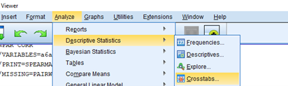
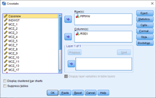
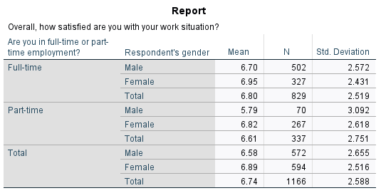

Relationships between variables: Part-time work, gender and satisfaction
Exercises developed by Jen Buckley
Use data to explore the following questions:
Are there gender differences in part-time employment? ⚧️⏲️
How happy are part-time workers with their work situation and does it vary by gender? ⏲️😀⚧️
Learning outcomes
The learning outcomes of this section are:
aware that the techniques used to examine relationship between different variables depends on the types of variables being considered.
can produce cross-tabulations and interpret output such as row and column percentages.
can compare means between groups.
Part 1: Gender differences in part-time employment?
Explore your variables
Start by creating frequency tables for our first two variables to check their distribution and measurement.
The variables are:
RSEX‘Respondent’s gender’FtPtWKr‘Are you in full-time or part-time employment?’
The steps are:
- Analyse > descriptive statistics > Frequencies
Tip: Remember, you can change the list of variables to ‘Display names’.
What is the level of measurement of the two variables?
Which variable has more missing values? Why do you think this is?
RSEXandFtPtWKrare categorical variables with two categories.FtPtWKrhas many more missing values. There are 600 system missing values. These are cases where a question about employment was not applicable.
Crosstabulation
To look at the relationship between two categorical variables (nominal or ordinal) we can use a crosstabulation (‘crosstab’).
A crosstabulation involving two variables splits cases across categories of both variables. We see the number of cases in each category for one variable that also belong to each category of another. It tells us about how values of one categorical variable are conditional on the values of another.
We can express this in counts (raw figures) or in percentages. A common practice is to put independent variable in the columns and ask for column percentages.
Use the SPSS menu, to create a crosstabulation:
- Analyze > Descriptive Statistics > Crosstabs

Crosstabs dialogue box
In the crosstabs dialogue box, put the dependent variable in the ‘row’ and the independent variable in the ‘column’. Therefore,
FtPtWkrin the rowRSEXin the columnPress OK

This crosstab has separated the sample into Male, Female and Total. The table we get includes counts only.
It is difficult to interpret!
- Repeat the steps above and select the Cells box in the crosstabs menu. In the Cells box, under percentages, select column.
Use the table and decide
What percentage of males work full-time?
Is it higher than the percentage of females who work full-time?
What percentage of everyone works full-time?
Use the table and decide:
85% of males who are employed, work full-time.
Yes, only 50% of females who are employed work full-time.
66% of people who are employed, work full-time.
What percent of part-time workers are female?
We now know that women are more likely to work part-time. But what proportion of part-time workers are female? To answer this question, we need to calculate the percentages a different way.
- Repeat the steps above but in the Cells box select Row percentages instead of column.
We now get different percentages. The table divides the sample into part-time and full-time workers. Use the table and decide:
What percent of part-time workers are male?
What percent of part-time workers are female?
About 21% of part-time workers are male.
About 79% of part-time workers are female
Part 2: Examining levels of satisfaction with work
Check your variables
How satisfied are people on average with their work situation? Start by examining the variable MCZ_11.
Analyse > descriptive statistics > Frequencies
Select appropriate Charts and Statistics
Compare means
Now, let’s examine if satisfaction with work situation varies by sex.
- Analyse > Compare Means > Means
In the box,
Add
MCZ_11to the dependent list.RSEXandFtPtWKRto Layer 1 of 1.Press OK.
Review the output and answer the following questions:
What is the mean score for those in full-time work and is it higher or lower than those in part-time work?
What is the mean score for males and is it higher or lower than for females?
The mean for those in full-time work is 6.8 – which is slightly higher than those in part-time work (6.61).
Score for males is 6.34, which is slightly lower than the score for females, 6.61.
Adding a layer to a table
As a a final step, let’s look at the difference between males and female part- time workers.
- Analyse > Compare Means > Means
In the Means box,
Add
MCZ_11to the dependent list as beforeAdd only
FtPtWKRto Layer 1 of 1Click Next in the layer box so that it shows Layer 2 of 2
Add
RsexClick OK
We now get a table that reports differences by both sex and whether someone is full or part time.

- Which group has the lowest score?
- Is there a differences between male and female part-time workers in terms of their satisfaction with their work situation?
Male and part-time
Yes, male part-time workers score lower in their satisfaction with their work situation (5.79) then female part-time workers (6.82) and also male full-time workers.
How can we understand these results? Think of reasons why we see this pattern male part-time employees.
But are these differences statistically significant?
In this exercise, you have compared groups via a cross-tabulation and by comparing means. Examining these differences gives insight into the relationship between variables in the sample. But it is important to remember that we only have data from a sample. The next exercise looks at how we can build on these analyses to make inferences about the population.